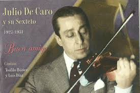

El violín siempre estuvo presente, siendo una parte esencial del sonido del tango argentino. Además, los violinistas de tango introdujeron técnicas de sonido innovadoras hasta el momento que incluían golpes de arco y todo tipo de percusiones sobre el instrumento,
La técnica vocal necesaria para cantar tango es un tanto particular: podría decirse que se ubica en un punto medio entre las usadas en la música popular y la lírica. Si bien han existido muchos grandes intérpretes que no pulieron sus talentos, las exigencias han crecido en las últimas décadas y resulta poco común que un artista actual no tenga una formación académica.A diferencia de la ópera, no existen restricciones acerca de la tonalidad en la que debería interpretarse un tango; del mismo modo, la mayoría de las piezas pueden ser cantadas por hombres y mujeres indistintamente. Es posible apreciar la variedad de aportes que surge de tal libertad al comparar diferentes versiones de un mismo tango; al escuchar a Julio Sosa, Carlos Gardel y Roberto Goyeneche, por ejemplo, se perciben matices muy diversos, tanto por el color y la tesitura de cada voz como por la interpretación.
Tango Argentino es un espectáculo coreográfico-musical de tango, creado y dirigido por Claudio Segovia y Héctor Orezzoli, con asesoramiento de Juan Carlos Copes, y coreografía diseñada por los propios bailarines que integraron los elencos. Fue estrenado en 1983 en París y en 1985 en Broadway (Nueva York), alcanzando un enorme éxito de alcance mundial, manteniéndose en cartel por más de una década. Se le atribuye una influencia decisiva en el renacimiento mundial del tango, como danza y como género musical.
A fines del año 1923, Julio De Caro se desvinculó de la orquesta de Juan Carlos Cobián y armó una formación para actuar en el Café Colón, de Avenida de Mayo 999, y en LOZ Radio Sudamérica. Eran cinco los componentes y, aunque sus compañeros no lo habían resuelto, tomó por su cuenta la dirección del conjunto; los nombres: Julio y Emilio De Caro (violines), Francisco De Caro (piano), Pedro Maffia y Luis Petrucelli (bandoneones).
Carlitos Gardel se convirtió en hincha de fútbol en Cataluña. Les robó el alma a los jugadores del Barcelona cuando después de un partido por la final del campeonato de España, contra el Real Madrid, fue a cantarles a los jugadores lesionados en la enfermería.En Argentina su club era Racing. También era aficionado a otros deportes como el boxeo, las bochas, la pelota vasca y el turf. Era amigo del jockey Irineo Leguisamo y propietario de ocho caballos de carrera. Solía salir a correr y practicar gimnasia.
Si el tango es la música de Buenos Aires, el fileteado es su trazo, su letra escrita a mano, su firma. Enroscado, recargado y dramático, como el espíritu porteño, el fileteado y sus mensajes son un llamado de atención a quienes habitan la ciudad, para que no olviden sus orígenes, su historia, e incluso, su filosofía de vida. Te contamos por qué la Unesco lo ha declarado Patrimonio Inmaterial de la Humanidad.
Al igual que el tango, el asado es sumamente metódico dentro de la Comida Argentina. Ambos son una manera de olvidarse del dolor y una manera de reconectarse de nuevo consigo mismo y con los demás. El tango es un baile de cuerpos entrelazados, un diálogo, es seducción en movimiento. El asado, por su parte, es para la Comida Argentina un punto de encuentro, de comunión. Requiere de paciencia y amigos para disfrutarse. Es un largo proceso que se va disfrutando de a poco y en el que cada bocado es mejor que el anterior. El tango y la comida, sobre todo los cortes de carne, son un elemento fundamental de la vida argentina, cuidados celosamente por quienes los disfrutan por igual.